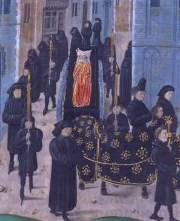

XXI LES FUNERAILLES DE L'AMOUR
Les cornettes d'oubli sonnent sur les murailles.
N'allumez plus les feux! Dispersez les batailles!
Apaisez sous le chant la légende et le dit!
Voici venir la fin de notre longue histoire
Quelle barque a cinglé des rives de mémoire?
Quelle procession aux îles resplendit?
Obsédantes, des voix prolongent des silences.
L'ombre n'abdique pas quand renonce la danse.
Les couples dédaignés errent au fil des nuits.
Ils mènent leurs amours et s'enivrent en rêve.
Le maître ne connaît la mine qui le grève
Ni pourquoi ses regrets s'enténèbrent d'ennuis.
Dix ans durant, les rois muselèrent les portes.
Ils élevèrent haut des citadelles fortes,
Les clairons ont clamé pour étouffer le lai.
Mais rien ne durera, hors Pâris et Hélène.
Troie est tombé rongé par une cantilène
Pour que brille longtemps le conte qu'il celait.
Apprêtez à l'amour de dignes funérailles.
Mais si les blés sont hauts, sourdes sont les semailles.
Aux confins de mon âme, enfouissez le mort -
Et qu'il ne reste plus un seul débris du songe!
Amour est un miroir au reflet de mensonge.
Le squelette capté monte, Gorgone d'or.
L'aube qui va lever chassera les étoiles.
Un ivrogne en chantant trébuche sur des dalles.
Ce chant m'est trop connu dont je sais les accords.
Amoncelez la nuit, le rocher, le silence,
Et que tout ce tombeau ma hantise balance
S'il peut être un tombeau lorsqu'il n'est pas de corps.
Michel Galiana (c) 1991
|

|
XXI THE FUNERAL OF LOVE
The horns of oblivion ring along the rampart.
No more fires be lit! Let the host fall apart!
Let legend and tale be soothed beneath the song!
Behold how to an end comes our long story!
What boat has sailed from the shores of memory?
What is, on the islands, this train gleaming along?
Obsessive voices prolonging the silences.
As shadow does not yield to receding dances.
Disparaged couples still wander through the nights.
They carry on their loves and they grow drunk in dreams.
The master does not know the sap that ruins him,
His regrets grow darker with spleen: he wonders why.
For ten long years the kings strove to muzzle the gates.
They erected mighty citadels to great heights.
Trumpets were made to blare. The lay must not be heard.
But nothing will endure, save Paris and Helen.
Troy did fall, undermined by a simple poem,
So that the tale it hid might shine forevermore.
For love let us prepare a worthy interment
But when the wheat stands tall, the sowing is silent.
In the outermost fields of my soul, be its tomb!
And of the dream we dreamt the slightest trace must go!
For love is a mirror with deceptive shadow:
The skeleton it raised is a golden Gorgon.
The dawn about to rise will chase away the stars.
A bawling drunkard has stumbled over the tar
Of this familiar song I could sing all the chords.
Pile up the night, the rock, the silence to a heap
So that out of that tomb my haunting may not creep—
If it can be a tomb where never was a corpse.
Transl. Christian Souchon 01.01.2005-2026 (c) (r) All rights reserved
|